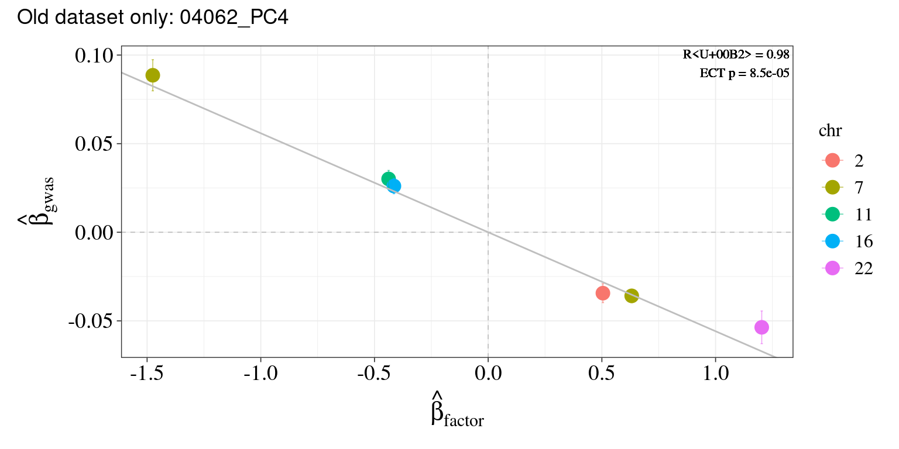
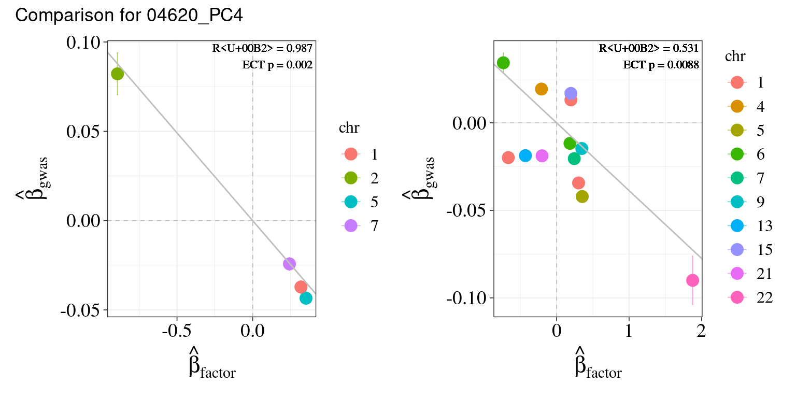
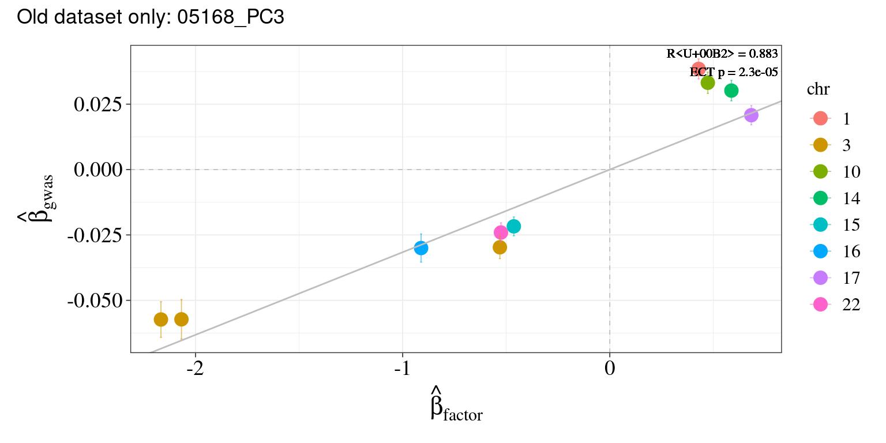
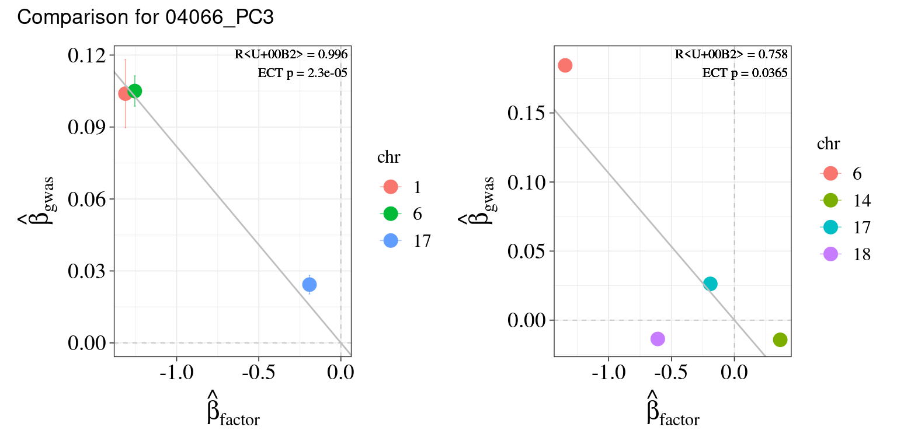
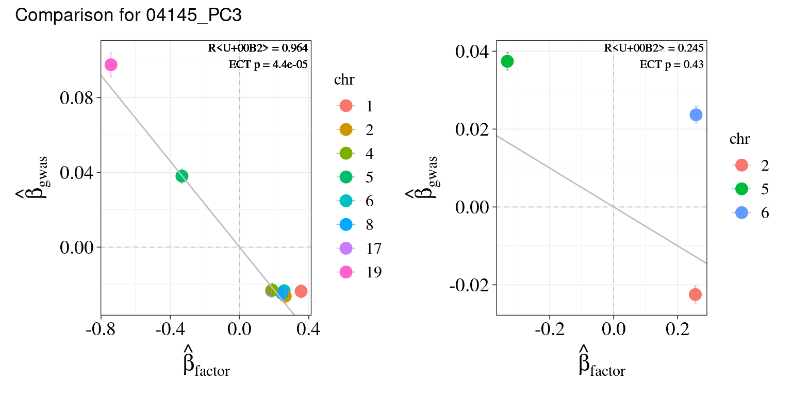

Last updated: 2025-10-29
Checks: 6 1
Knit directory: factor_analysis_new/
This reproducible R Markdown analysis was created with workflowr (version 1.7.0). The Checks tab describes the reproducibility checks that were applied when the results were created. The Past versions tab lists the development history.
The R Markdown file has unstaged changes. To know which version of
the R Markdown file created these results, you’ll want to first commit
it to the Git repo. If you’re still working on the analysis, you can
ignore this warning. When you’re finished, you can run
wflow_publish to commit the R Markdown file and build the
HTML.
Great job! The global environment was empty. Objects defined in the global environment can affect the analysis in your R Markdown file in unknown ways. For reproduciblity it’s best to always run the code in an empty environment.
The command set.seed(20221201) was run prior to running
the code in the R Markdown file. Setting a seed ensures that any results
that rely on randomness, e.g. subsampling or permutations, are
reproducible.
Great job! Recording the operating system, R version, and package versions is critical for reproducibility.
Nice! There were no cached chunks for this analysis, so you can be confident that you successfully produced the results during this run.
Great job! Using relative paths to the files within your workflowr project makes it easier to run your code on other machines.
Great! You are using Git for version control. Tracking code development and connecting the code version to the results is critical for reproducibility.
The results in this page were generated with repository version 9009455. See the Past versions tab to see a history of the changes made to the R Markdown and HTML files.
Note that you need to be careful to ensure that all relevant files for
the analysis have been committed to Git prior to generating the results
(you can use wflow_publish or
wflow_git_commit). workflowr only checks the R Markdown
file, but you know if there are other scripts or data files that it
depends on. Below is the status of the Git repository when the results
were generated:
Unstaged changes:
Modified: analysis/revision_examine_oldnew_bloodcelltraits.Rmd
Note that any generated files, e.g. HTML, png, CSS, etc., are not included in this status report because it is ok for generated content to have uncommitted changes.
These are the previous versions of the repository in which changes were
made to the R Markdown
(analysis/revision_examine_oldnew_bloodcelltraits.Rmd) and
HTML (docs/revision_examine_oldnew_bloodcelltraits.html)
files. If you’ve configured a remote Git repository (see
?wflow_git_remote), click on the hyperlinks in the table
below to view the files as they were in that past version.
| File | Version | Author | Date | Message |
|---|---|---|---|---|
| Rmd | ea8d0f3 | XSun | 2025-10-24 | update |
| html | ea8d0f3 | XSun | 2025-10-24 | update |
library(data.table)
library(patchwork)
library(ggplot2)
library(dplyr)
plot_ECT_effect_scatter <- function(dat, ECT_p, fdr_cutoff = 0.2) {
# 1. Filter SNPs by FDR threshold
snp_select <- dat %>%
filter(FDR.exposure < fdr_cutoff) %>%
mutate(
chr = as.numeric(as.character(chr.exposure)),
chr = factor(chr.exposure, levels = sort(unique(chr.exposure)))
)
if (nrow(snp_select) == 0) {
#stop("No SNPs passed the FDR cutoff.")
p <- NULL
}else{
# 2. Linear regression
fit <- lm(beta.outcome ~ 0 + beta.exposure, data = snp_select)
# 4. Create the plot
p <- ggplot(snp_select, aes(x = beta.exposure, y = beta.outcome, color = chr)) +
geom_point(size = 4) +
geom_errorbar(aes(ymin = beta.outcome - se.outcome,
ymax = beta.outcome + se.outcome),
width = 0.01, alpha = 0.6) +
geom_abline(slope = coef(fit)[1], intercept = 0, color = "grey", size = 0.5) +
geom_vline(xintercept = 0, color = "grey", linetype = "dashed") +
geom_hline(yintercept = 0, color = "grey", linetype = "dashed") +
geom_label(
aes(x = Inf, y = Inf),
hjust = 1, vjust = 1,
label = paste0(
"R² = ", signif(summary(fit)$r.squared, 3),
"\nECT p = ", signif(ECT_p, 3)
),
color = "black", family = "Times", size = 3, label.size = NA, fill = NA
) +
xlab(expression(hat(beta)[factor])) +
ylab(expression(hat(beta)[gwas])) +
theme_bw(base_line_size = 0.3) +
theme(
axis.title.x = element_text(size = 16),
axis.text.x = element_text(size = 14, color = "black"),
axis.title.y = element_text(size = 16),
axis.text.y = element_text(size = 14, color = "black"),
text = element_text(family = "Times"),
legend.text = element_text(size = 12),
legend.title = element_text(size = 12)
)
}
return(p)
}We examine some blood cell traits here. To check why some pairs were reported by old GWAS but not by new.
ECT_old <- readRDS("/project/xinhe/xsun/pathway_factor/analysis/1.ECT_v2/ECT/platelet-RET-ebi-a-GCST004622_ECT.RDS")
ECT_new <- readRDS("/project/xinhe/xsun/pathway_factor/analysis/1.ECT_v2/ECT/platelet-RET-ebi-a-GCST90002405_ECT.RDS")
factor <- "04062_PC4"
cat("Old GWAS")Old GWASprint(ECT_old[ECT_old$factor_name == factor,]) factor_name p_std r_std p_ECT num_supp_SNP
149 04062_PC4 2.02523374839567e-05 0.9796313 8.5e-05 6cat("New GWAS")New GWASprint(ECT_new[ECT_new$factor_name == factor,]) factor_name p_std r_std p_ECT num_supp_SNP
149 04062_PC4 No enough supporting SNPs NA NA 0snp_selected_old <- fread("/project/xinhe/xsun/pathway_factor/data_v2/indep_loci/RET-ebi-a-GCST004622_prunedsnps.txt")
snp_selected_new <- fread("/project/xinhe/xsun/pathway_factor/data_v2/indep_loci/RET-ebi-a-GCST90002405_prunedsnps.txt")
cat(paste0("number of independent loci selected -- old GWAS: ", nrow(snp_selected_old)))number of independent loci selected -- old GWAS: 155cat(paste0("number of independent loci selected -- new GWAS: ", nrow(snp_selected_new)))number of independent loci selected -- new GWAS: 413cat(paste0("number of overlaps: ", sum(snp_selected_old$SNP %in% snp_selected_new$SNP)))number of overlaps: 44harmo_old <- readRDS("/project/xinhe/xsun/pathway_factor/analysis/1.ECT_v2/assoc_harmonize//platelet-RET-ebi-a-GCST004622_harmo.RDS")
harmo_old_factor <- harmo_old[[factor]]
harmo_new <- readRDS("/project/xinhe/xsun/pathway_factor/analysis/1.ECT_v2/assoc_harmonize//platelet-RET-ebi-a-GCST90002405_harmo.RDS")
harmo_new_factor <- harmo_new[[factor]]
supp_snp_old <- harmo_old_factor$SNP[harmo_old_factor$FDR.exposure < 0.2]
supp_snp_new <- harmo_new_factor$SNP[harmo_new_factor$FDR.exposure < 0.2]
df_supp_snp_old <- harmo_old_factor[harmo_old_factor$FDR.exposure < 0.2 |harmo_old_factor$SNP %in% supp_snp_new, c("SNP","pval.outcome","pval.exposure","FDR.exposure")]
df_supp_snp_new <- harmo_new_factor[harmo_new_factor$FDR.exposure < 0.2 |harmo_new_factor$SNP %in% supp_snp_old, c("SNP","pval.outcome","pval.exposure","FDR.exposure")]
df_merged <- merge(df_supp_snp_old, df_supp_snp_new,
by = "SNP",
suffixes = c(".old", ".new"),
all = TRUE)
DT::datatable(df_merged,caption = htmltools::tags$caption( style = 'caption-side: left; text-align: left; color:black; font-size:150% ;','Supporting SNPs in old and new GWAS '),options = list(pageLength = 10) )plot_old <- plot_ECT_effect_scatter(dat = harmo_old_factor,ECT_p = ECT_old[ECT_old$factor_name == factor,]$p_ECT)
plot_new <- plot_ECT_effect_scatter(dat = harmo_new_factor,ECT_p = ECT_new[ECT_new$factor_name == factor,]$p_ECT)
if (!is.null(plot_old) & !is.null(plot_new)) {
# both exist → plot side by side
(plot_old | plot_new) +
plot_annotation(title = paste0("Comparison for ", factor))
} else if (!is.null(plot_old) & is.null(plot_new)) {
# only old exists
plot_old +
plot_annotation(title = paste0("Old dataset only: ", factor))
} else if (is.null(plot_old) & !is.null(plot_new)) {
# only new exists
plot_new +
plot_annotation(title = paste0("New dataset only: ", factor))
} else {
# both null
print("No supporting SNPs for either dataset.")
}
ECT_old <- readRDS("/project/xinhe/xsun/pathway_factor/analysis/1.ECT_v2/ECT/B_cell-mpv-ebi-a-GCST004599_ECT.RDS")
ECT_new <- readRDS("/project/xinhe/xsun/pathway_factor/analysis/1.ECT_v2/ECT/B_cell-MPV-ebi-a-GCST90002395_ECT.RDS")
factor <- "04620_PC4"
cat("Old GWAS")Old GWASprint(ECT_old[ECT_old$factor_name == factor,]) factor_name p_std r_std p_ECT num_supp_SNP
574 04620_PC4 0.000665117617629492 0.9865446 0.0019998 4cat("New GWAS")New GWASprint(ECT_new[ECT_new$factor_name == factor,]) factor_name p_std r_std p_ECT num_supp_SNP
574 04620_PC4 0.00310994722296906 0.5311117 0.0087991 13snp_selected_old <- fread("/project/xinhe/xsun/pathway_factor/data_v2/indep_loci/mpv-ebi-a-GCST004599_prunedsnps.txt")
snp_selected_new <- fread("/project/xinhe/xsun/pathway_factor/data_v2/indep_loci/MPV-ebi-a-GCST90002395_prunedsnps.txt")
cat(paste0("number of independent loci selected -- old GWAS: ", nrow(snp_selected_old)))number of independent loci selected -- old GWAS: 213cat(paste0("number of independent loci selected -- new GWAS: ", nrow(snp_selected_new)))number of independent loci selected -- new GWAS: 465cat(paste0("number of overlaps: ", sum(snp_selected_old$SNP %in% snp_selected_new$SNP)))number of overlaps: 52harmo_old <- readRDS("/project/xinhe/xsun/pathway_factor/analysis/1.ECT_v2/assoc_harmonize//B_cell-mpv-ebi-a-GCST004599_harmo.RDS")
harmo_old_factor <- harmo_old[[factor]]
harmo_new <- readRDS("/project/xinhe/xsun/pathway_factor/analysis/1.ECT_v2/assoc_harmonize//B_cell-MPV-ebi-a-GCST90002395_harmo.RDS")
harmo_new_factor <- harmo_new[[factor]]
supp_snp_old <- harmo_old_factor$SNP[harmo_old_factor$FDR.exposure < 0.2]
supp_snp_new <- harmo_new_factor$SNP[harmo_new_factor$FDR.exposure < 0.2]
df_supp_snp_old <- harmo_old_factor[harmo_old_factor$FDR.exposure < 0.2 |harmo_old_factor$SNP %in% supp_snp_new, c("SNP","pval.outcome","pval.exposure","FDR.exposure")]
df_supp_snp_new <- harmo_new_factor[harmo_new_factor$FDR.exposure < 0.2 |harmo_new_factor$SNP %in% supp_snp_old, c("SNP","pval.outcome","pval.exposure","FDR.exposure")]
df_merged <- merge(df_supp_snp_old, df_supp_snp_new,
by = "SNP",
suffixes = c(".old", ".new"),
all = TRUE)
DT::datatable(df_merged,caption = htmltools::tags$caption( style = 'caption-side: left; text-align: left; color:black; font-size:150% ;','Supporting SNPs in old and new GWAS '),options = list(pageLength = 10) )plot_old <- plot_ECT_effect_scatter(dat = harmo_old_factor,ECT_p = ECT_old[ECT_old$factor_name == factor,]$p_ECT)
plot_new <- plot_ECT_effect_scatter(dat = harmo_new_factor,ECT_p = ECT_new[ECT_new$factor_name == factor,]$p_ECT)
if (!is.null(plot_old) & !is.null(plot_new)) {
# both exist → plot side by side
(plot_old | plot_new) +
plot_annotation(title = paste0("Comparison for ", factor))
} else if (!is.null(plot_old) & is.null(plot_new)) {
# only old exists
plot_old +
plot_annotation(title = paste0("Old dataset only: ", factor))
} else if (is.null(plot_old) & !is.null(plot_new)) {
# only new exists
plot_new +
plot_annotation(title = paste0("New dataset only: ", factor))
} else {
# both null
print("No supporting SNPs for either dataset.")
}
ECT_old <- readRDS("/project/xinhe/xsun/pathway_factor/analysis/1.ECT_v2/ECT/CD15_positive_leukocyte-MCH-ebi-a-GCST004630_ECT.RDS")
ECT_new <- readRDS("/project/xinhe/xsun/pathway_factor/analysis/1.ECT_v2/ECT/CD15_positive_leukocyte-MCH-ebi-a-GCST90002390_ECT.RDS")
factor <- "05168_PC3"
cat("Old GWAS")Old GWASprint(ECT_old[ECT_old$factor_name == factor,]) factor_name p_std r_std p_ECT num_supp_SNP
998 05168_PC3 1.71918694359914e-05 0.8833665 2.3e-05 10cat("New GWAS")New GWASprint(ECT_new[ECT_new$factor_name == factor,]) factor_name p_std r_std p_ECT num_supp_SNP
998 05168_PC3 No enough supporting SNPs NA NA 0snp_selected_old <- fread("/project/xinhe/xsun/pathway_factor/data_v2/indep_loci/MCH-ebi-a-GCST004630_prunedsnps.txt")
snp_selected_new <- fread("/project/xinhe/xsun/pathway_factor/data_v2/indep_loci/MCH-ebi-a-GCST90002390_prunedsnps.txt")
cat(paste0("number of independent loci selected -- old GWAS: ", nrow(snp_selected_old)))number of independent loci selected -- old GWAS: 203cat(paste0("number of independent loci selected -- new GWAS: ", nrow(snp_selected_new)))number of independent loci selected -- new GWAS: 462cat(paste0("number of overlaps: ", sum(snp_selected_old$SNP %in% snp_selected_new$SNP)))number of overlaps: 63harmo_old <- readRDS("/project/xinhe/xsun/pathway_factor/analysis/1.ECT_v2/assoc_harmonize//CD15_positive_leukocyte-MCH-ebi-a-GCST004630_harmo.RDS")
harmo_old_factor <- harmo_old[[factor]]
harmo_new <- readRDS("/project/xinhe/xsun/pathway_factor/analysis/1.ECT_v2/assoc_harmonize//CD15_positive_leukocyte-MCH-ebi-a-GCST90002390_harmo.RDS")
harmo_new_factor <- harmo_new[[factor]]
supp_snp_old <- harmo_old_factor$SNP[harmo_old_factor$FDR.exposure < 0.2]
supp_snp_new <- harmo_new_factor$SNP[harmo_new_factor$FDR.exposure < 0.2]
df_supp_snp_old <- harmo_old_factor[harmo_old_factor$FDR.exposure < 0.2 |harmo_old_factor$SNP %in% supp_snp_new, c("SNP","pval.outcome","pval.exposure","FDR.exposure")]
df_supp_snp_new <- harmo_new_factor[harmo_new_factor$FDR.exposure < 0.2 |harmo_new_factor$SNP %in% supp_snp_old, c("SNP","pval.outcome","pval.exposure","FDR.exposure")]
df_merged <- merge(df_supp_snp_old, df_supp_snp_new,
by = "SNP",
suffixes = c(".old", ".new"),
all = TRUE)
DT::datatable(df_merged,caption = htmltools::tags$caption( style = 'caption-side: left; text-align: left; color:black; font-size:150% ;','Supporting SNPs in old and new GWAS '),options = list(pageLength = 10) )plot_old <- plot_ECT_effect_scatter(dat = harmo_old_factor,ECT_p = ECT_old[ECT_old$factor_name == factor,]$p_ECT)
plot_new <- plot_ECT_effect_scatter(dat = harmo_new_factor,ECT_p = ECT_new[ECT_new$factor_name == factor,]$p_ECT)
if (!is.null(plot_old) & !is.null(plot_new)) {
# both exist → plot side by side
(plot_old | plot_new) +
plot_annotation(title = paste0("Comparison for ", factor))
} else if (!is.null(plot_old) & is.null(plot_new)) {
# only old exists
plot_old +
plot_annotation(title = paste0("Old dataset only: ", factor))
} else if (is.null(plot_old) & !is.null(plot_new)) {
# only new exists
plot_new +
plot_annotation(title = paste0("New dataset only: ", factor))
} else {
# both null
print("No supporting SNPs for either dataset.")
}
ECT_old <- readRDS("/project/xinhe/xsun/pathway_factor/analysis/1.ECT_v2/ECT/T_cell-hgb-ebi-a-GCST004615_ECT.RDS")
ECT_new <- readRDS("/project/xinhe/xsun/pathway_factor/analysis/1.ECT_v2/ECT/T_cell-HB-ebi-a-GCST90002384_ECT.RDS")
factor <- "04066_PC3"
cat("Old GWAS")Old GWASprint(ECT_old[ECT_old$factor_name == factor,]) factor_name p_std r_std p_ECT num_supp_SNP
333 04066_PC3 0.00205838437514155 0.9958875 2.3e-05 3cat("New GWAS")New GWASprint(ECT_new[ECT_new$factor_name == factor,]) factor_name p_std r_std p_ECT num_supp_SNP
333 04066_PC3 0.0548051452703656 0.757874 0.0364964 4snp_selected_old <- fread("/project/xinhe/xsun/pathway_factor/data_v2/indep_loci/hgb-ebi-a-GCST004615_prunedsnps.txt")
snp_selected_new <- fread("/project/xinhe/xsun/pathway_factor/data_v2/indep_loci/HB-ebi-a-GCST90002384_prunedsnps.txt")
cat(paste0("number of independent loci selected -- old GWAS: ", nrow(snp_selected_old)))number of independent loci selected -- old GWAS: 123cat(paste0("number of independent loci selected -- new GWAS: ", nrow(snp_selected_new)))number of independent loci selected -- new GWAS: 438cat(paste0("number of overlaps: ", sum(snp_selected_old$SNP %in% snp_selected_new$SNP)))number of overlaps: 25harmo_old <- readRDS("/project/xinhe/xsun/pathway_factor/analysis/1.ECT_v2/assoc_harmonize/T_cell-hgb-ebi-a-GCST004615_harmo.RDS")
harmo_old_factor <- harmo_old[[factor]]
harmo_new <- readRDS("/project/xinhe/xsun/pathway_factor/analysis/1.ECT_v2/assoc_harmonize/T_cell-HB-ebi-a-GCST90002384_harmo.RDS")
harmo_new_factor <- harmo_new[[factor]]
supp_snp_old <- harmo_old_factor$SNP[harmo_old_factor$FDR.exposure < 0.2]
supp_snp_new <- harmo_new_factor$SNP[harmo_new_factor$FDR.exposure < 0.2]
df_supp_snp_old <- harmo_old_factor[harmo_old_factor$FDR.exposure < 0.2 |harmo_old_factor$SNP %in% supp_snp_new, c("SNP","pval.outcome","pval.exposure","FDR.exposure")]
df_supp_snp_new <- harmo_new_factor[harmo_new_factor$FDR.exposure < 0.2 |harmo_new_factor$SNP %in% supp_snp_old, c("SNP","pval.outcome","pval.exposure","FDR.exposure")]
df_merged <- merge(df_supp_snp_old, df_supp_snp_new,
by = "SNP",
suffixes = c(".old", ".new"),
all = TRUE)
DT::datatable(df_merged,caption = htmltools::tags$caption( style = 'caption-side: left; text-align: left; color:black; font-size:150% ;','Supporting SNPs in old and new GWAS '),options = list(pageLength = 10) )plot_old <- plot_ECT_effect_scatter(dat = harmo_old_factor,ECT_p = ECT_old[ECT_old$factor_name == factor,]$p_ECT)
plot_new <- plot_ECT_effect_scatter(dat = harmo_new_factor,ECT_p = ECT_new[ECT_new$factor_name == factor,]$p_ECT)
if (!is.null(plot_old) & !is.null(plot_new)) {
# both exist → plot side by side
(plot_old | plot_new) +
plot_annotation(title = paste0("Comparison for ", factor))
} else if (!is.null(plot_old) & is.null(plot_new)) {
# only old exists
plot_old +
plot_annotation(title = paste0("Old dataset only: ", factor))
} else if (is.null(plot_old) & !is.null(plot_new)) {
# only new exists
plot_new +
plot_annotation(title = paste0("New dataset only: ", factor))
} else {
# both null
print("No supporting SNPs for either dataset.")
}
ECT_old <- readRDS("/project/xinhe/xsun/pathway_factor/analysis/1.ECT_v2/ECT/B_cell-RBC-ebi-a-GCST004601_ECT.RDS")
ECT_new <- readRDS("/project/xinhe/xsun/pathway_factor/analysis/1.ECT_v2/ECT/B_cell-RBC-ebi-a-GCST90002403_ECT.RDS")
factor <- "04145_PC3"
cat("Old GWAS")Old GWASprint(ECT_old[ECT_old$factor_name == factor,]) factor_name p_std r_std p_ECT num_supp_SNP
403 04145_PC3 2.64970608617299e-06 0.9638574 4.4e-05 8cat("New GWAS")New GWASprint(ECT_new[ECT_new$factor_name == factor,]) factor_name p_std r_std p_ECT num_supp_SNP
403 04145_PC3 0.505162576014114 0.2448641 0.4295704 3snp_selected_old <- fread("/project/xinhe/xsun/pathway_factor/data_v2/indep_loci/hgb-ebi-a-GCST004615_prunedsnps.txt")
snp_selected_new <- fread("/project/xinhe/xsun/pathway_factor/data_v2/indep_loci/HB-ebi-a-GCST90002384_prunedsnps.txt")
cat(paste0("number of independent loci selected -- old GWAS: ", nrow(snp_selected_old)))number of independent loci selected -- old GWAS: 123cat(paste0("number of independent loci selected -- new GWAS: ", nrow(snp_selected_new)))number of independent loci selected -- new GWAS: 438cat(paste0("number of overlaps: ", sum(snp_selected_old$SNP %in% snp_selected_new$SNP)))number of overlaps: 25harmo_old <- readRDS("/project/xinhe/xsun/pathway_factor/analysis/1.ECT_v2/assoc_harmonize/B_cell-RBC-ebi-a-GCST004601_harmo.RDS")
harmo_old_factor <- harmo_old[[factor]]
harmo_new <- readRDS("/project/xinhe/xsun/pathway_factor/analysis/1.ECT_v2/assoc_harmonize/B_cell-RBC-ebi-a-GCST90002403_harmo.RDS")
harmo_new_factor <- harmo_new[[factor]]
supp_snp_old <- harmo_old_factor$SNP[harmo_old_factor$FDR.exposure < 0.2]
supp_snp_new <- harmo_new_factor$SNP[harmo_new_factor$FDR.exposure < 0.2]
df_supp_snp_old <- harmo_old_factor[harmo_old_factor$FDR.exposure < 0.2 |harmo_old_factor$SNP %in% supp_snp_new, c("SNP","pval.outcome","pval.exposure","FDR.exposure")]
df_supp_snp_new <- harmo_new_factor[harmo_new_factor$FDR.exposure < 0.2 |harmo_new_factor$SNP %in% supp_snp_old, c("SNP","pval.outcome","pval.exposure","FDR.exposure")]
df_merged <- merge(df_supp_snp_old, df_supp_snp_new,
by = "SNP",
suffixes = c(".old", ".new"),
all = TRUE)
DT::datatable(df_merged,caption = htmltools::tags$caption( style = 'caption-side: left; text-align: left; color:black; font-size:150% ;','Supporting SNPs in old and new GWAS '),options = list(pageLength = 10) )plot_old <- plot_ECT_effect_scatter(dat = harmo_old_factor,ECT_p = ECT_old[ECT_old$factor_name == factor,]$p_ECT)
plot_new <- plot_ECT_effect_scatter(dat = harmo_new_factor,ECT_p = ECT_new[ECT_new$factor_name == factor,]$p_ECT)
if (!is.null(plot_old) & !is.null(plot_new)) {
# both exist → plot side by side
(plot_old | plot_new) +
plot_annotation(title = paste0("Comparison for ", factor))
} else if (!is.null(plot_old) & is.null(plot_new)) {
# only old exists
plot_old +
plot_annotation(title = paste0("Old dataset only: ", factor))
} else if (is.null(plot_old) & !is.null(plot_new)) {
# only new exists
plot_new +
plot_annotation(title = paste0("New dataset only: ", factor))
} else {
# both null
print("No supporting SNPs for either dataset.")
}
sessionInfo()R version 4.2.0 (2022-04-22)
Platform: x86_64-pc-linux-gnu (64-bit)
Running under: CentOS Linux 7 (Core)
Matrix products: default
BLAS/LAPACK: /software/openblas-0.3.13-el7-x86_64/lib/libopenblas_haswellp-r0.3.13.so
locale:
[1] C
attached base packages:
[1] stats graphics grDevices utils datasets methods base
other attached packages:
[1] dplyr_1.1.4 ggplot2_4.0.0 patchwork_1.3.2.9000
[4] data.table_1.14.2
loaded via a namespace (and not attached):
[1] Rcpp_1.0.12 highr_0.9 RColorBrewer_1.1-3 pillar_1.9.0
[5] compiler_4.2.0 bslib_0.3.1 later_1.3.0 jquerylib_0.1.4
[9] git2r_0.30.1 workflowr_1.7.0 tools_4.2.0 digest_0.6.29
[13] gtable_0.3.6 jsonlite_1.8.0 evaluate_0.15 lifecycle_1.0.4
[17] tibble_3.2.1 pkgconfig_2.0.3 rlang_1.1.2 cli_3.6.1
[21] rstudioapi_0.13 crosstalk_1.2.0 yaml_2.3.5 xfun_0.41
[25] fastmap_1.1.0 withr_2.5.0 stringr_1.5.1 knitr_1.39
[29] htmlwidgets_1.5.4 generics_0.1.2 fs_1.5.2 vctrs_0.6.5
[33] sass_0.4.1 DT_0.22 tidyselect_1.2.0 grid_4.2.0
[37] rprojroot_2.0.3 glue_1.6.2 R6_2.5.1 fansi_1.0.3
[41] rmarkdown_2.25 farver_2.1.0 magrittr_2.0.3 whisker_0.4
[45] scales_1.4.0 promises_1.2.0.1 htmltools_0.5.2 dichromat_2.0-0.1
[49] httpuv_1.6.5 labeling_0.4.2 S7_0.2.0 utf8_1.2.2
[53] stringi_1.7.6